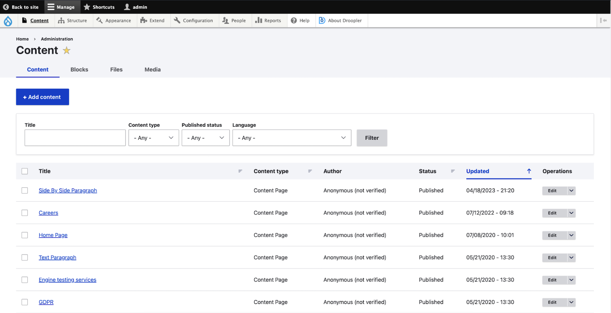

This article dives into switching your website from WordPress to Drupal, another content management system (CMS). We'll explore why you might consider this switch and how to prepare for it.
Why move from WordPress to Drupal?
There are a few reasons why someone might choose Drupal over WordPress:
-
More Control: Drupal offers more options for customizing how your website works and how your content is organized. This can be helpful for complex websites with specific needs.
-
Powerful Features: Drupal is built on a framework called Symfony, which allows developers to create powerful features more easily. This means your website can have more advanced functionalities.
-
Large Community: Drupal has a large and active community of developers who create add-ons (modules) for the system. This means there's a good chance there's already a module available for your specific needs, and you can find help online if you get stuck.
Is Drupal right for you?
While Drupal offers more power and flexibility, it can also be more complex to set up and manage than WordPress. Consider your website's needs and your own technical comfort level before making a switch.
Keeping Your Website Safe: Security in Drupal
Drupal is known for its strong security features, making it a good choice for websites that handle sensitive information. Here's why:
-
Regular Updates: The Drupal community frequently releases security updates to fix vulnerabilities. Keeping your Drupal software up-to-date is essential for maintaining a secure website.
-
Built-in Access Control: Drupal lets you control who can access different parts of your website. You can set permissions for entire pages, specific functionalities, or even individual data fields. This ensures only authorized users can view or edit sensitive information.
-
Easy User Management: Drupal allows you to create different user roles with varying permission levels. This makes it easy to manage access for administrators, editors, and other users on your website.
In short, Drupal provides a robust security framework to keep your website and its data safe.
Drupal: Built for Growth and Performance
Drupal shines when it comes to handling large websites and future growth. Here's why:
-
Performance: Optimized for speed, Drupal can efficiently manage massive amounts of content and high traffic volumes. This makes it ideal for websites that expect significant user growth.
-
Scalability: As your website expands, Drupal scales seamlessly to handle the increasing demands. Unlike WordPress, it can better accommodate a growing website's needs.
-
Powerful APIs: Drupal functions well as a backend API. It can share data easily in formats like JSON/XML, eliminating the need for custom code. This allows for smooth integration with mobile apps, frontend frameworks, and other tools you might use.
-
Advanced Content Management: For websites with extensive content and intricate structures, Drupal offers robust content management features. Pre-built "entities" like content types and groups help you organize your website's content logically.
-
Flexible Categorization: Categorizing content in Drupal is a breeze. You can easily define categories and subcategories to ensure your website stays well-organized, even with a vast amount of content.
-
Content Shaping: Drupal empowers you to not only manage content, but also customize it freely. You can add additional fields, create relationships between content types, and control how content displays on different parts of your website – all without touching code! Imagine creating complex filtered and sorted content views in just a few clicks within the user interface.
In essence, Drupal is built for websites that anticipate significant growth and require robust content management capabilities.
The Customizable Drupal Admin Interface
When it comes to crafting a website's administrative experience, Drupal reigns supreme. Here's what sets it apart:
Tailored to Your Needs: Unlike its counterpart, WordPress, Drupal offers unparalleled customization possibilities for the admin interface. This is a game-changer for projects that require:
-
Specific Layouts: Design the admin panel layout to match your workflow, ensuring a logical and efficient user experience.
-
Unique Visual Style: Infuse the admin panel with your brand identity by applying pre-designed themes or crafting custom styles. Personalize the look and feel to create a comfortable working environment for your administrators.
-
Granular Permissions: Set up precise user permissions within the admin panel. Restrict access to specific functionalities based on user roles. For instance, content editors won't have access to API integration settings or Cron job modifications unless explicitly granted permission.
Boosting Efficiency:
-
Customizable Blocks: Enhance the admin panel's functionality by adding blocks displaying crucial links or real-time statistics relevant to your team's needs.
-
Advanced Views: Create custom views that streamline content management. Filter and display specific content types based on defined criteria. Effortlessly integrate these views into existing or new menus within the admin panel, keeping frequently accessed information readily available.
-
Quick Access Shortcuts: Simplify workflows by adding shortcuts for functions your administrators use most often. Grant them one-click access to essential tools and features.
Control and Security:
-
Granular Access Control: Drupal's robust access control system allows you to meticulously manage user permissions within the admin panel. This ensures that only authorized users can access and modify specific settings, safeguarding the security and integrity of your website.
In essence, Drupal empowers you to build an admin interface that perfectly reflects your project's unique requirements. With its focus on customization and user experience, Drupal fosters a productive and secure environment for managing your website.

Planning for the Move:
-
Data Export: Before initiating the migration, decide how you'll provide data from your WordPress website. Typically, an XML backup file generated from WordPress is used.
-
Content Review: Carefully evaluate what content needs to be migrated to Drupal. You might not need everything – outdated information like news from 2009 can be excluded.
-
Prioritize Content: Focus on migrating essential content first, such as current blog posts, relevant pages, and user accounts (if applicable). Refer to our previous article on website migration for a more in-depth discussion of the planning stage.
The Migration Process:
(We'll cover the technical aspects of the migration process in a separate section)
-
Data Import: Once you've prepared your data and planned the migration, you'll use Drupal's built-in tools or contributed modules to import your content from the WordPress XML file.
-
Content Mapping: During the import, you might need to define how specific content types from WordPress translate to Drupal's content structures. This ensures your content is organized and displayed correctly on your new Drupal website.
Post-Migration Tasks:
-
Testing: After the migration is complete, thoroughly test your new Drupal website to ensure everything functions as expected. Verify content accuracy, navigation functionality, and overall site performance.
-
Cleanup: Review any temporary files or data used during the migration process and remove them to maintain a clean and secure Drupal environment.
By following these streamlined steps, you can effectively migrate your website from WordPress to Drupal and enjoy the benefits of a more scalable and secure CMS platform.
Migrating from WordPress to Drupal
Considering an upgrade from WordPress to Drupal for your website? This comprehensive guide simplifies the process into clear steps:
Planning the Journey:
-
Data Extraction: Before embarking on the migration, determine how you'll extract your data from WordPress. Typically, an XML backup file is used.
-
Content Streamlining: Carefully assess what content needs to be migrated. Focus on essential elements like current blog posts, relevant pages, and user accounts (if applicable). Remember, quality over quantity – outdated information can be excluded during migration.
Preparing Your Drupal Environment:
-
Data Structure Setup: Prepare Drupal's data structure to accommodate the incoming content. Identify which content types will utilize taxonomies or groups, and if any custom entities are required.
-
Essential Modules: Install Drupal modules like "Migrate Plus," "CTools," and "WordPress Migrate" to streamline the migration process. Consider installing additional modules needed for your website's functionalities (e.g., "Datetime" or "Telephone").
The Migration Process:
-
Data Import: Leverage Drupal's built-in tools or the "WordPress Migrate" module to import your content from the WordPress XML file.
-
Content Mapping: During the import process, define how specific content types from WordPress translate to Drupal's structures. This ensures your content is organized and displayed correctly on your new Drupal website.
Testing and Refinement:
-
Post-Migration Validation: After the migration is complete, rigorously test your new Drupal website to ensure everything functions as expected. Verify content accuracy, navigation functionality, and overall site performance.
-
Cleaning Up: Remove any temporary files or data used during the migration process to maintain a clean and secure Drupal environment.
Post-Migration Considerations:
-
URL Structure Optimization: If you plan to change the URL structure, set up appropriate redirects using the "Pathauto" module to preserve SEO benefits.
-
Functionality Migration: Migrate functionalities from WordPress to Drupal with care. This might involve utilizing contributed modules, custom code development, or a combination of both. Consider this an opportunity to streamline functionalities, remove unnecessary elements, or add new features.
Ensuring a Smooth Transition:
-
Content and Media Verification: Verify that content and media (images, videos) migrated from WordPress are consistent and displayed correctly on your new website.
-
Integration Checks: Ensure integrations with external services and APIs function as expected.
-
Error Monitoring: Monitor logs (using "Watchdog") for any post-migration errors and address them promptly.
-
SEO and Performance Optimization: Verify that Drupal's SEO modules are configured correctly and optimize page load speed if necessary.
-
Functionality and Permissions Testing: Test key website functionalities and user interactions. Ensure all content permissions are configured properly.
-
Responsiveness Across Devices: Verify that the website displays correctly on various devices after migration.
-
Quality Audit: Conduct a website quality audit using tools like "CodeSniffer" and "PHP Stan." Integrate automated testing (e.g., "Codeception") into your workflow.
-
Functional Process Replication: Replicate core user workflows (e.g., user registration, content creation) to ensure a seamless transition for users and administrators. This is crucial for functionalities built specifically for your website.
By following these steps and prioritizing quality assurance, you can successfully migrate your website from WordPress to Drupal and unlock the advantages of this robust CMS platform.
Additional Notes:
-
Website migration can be complex. Consider seeking professional help if needed.
-
This guide provides a simplified overview. The specific technical aspects of your migration may vary.